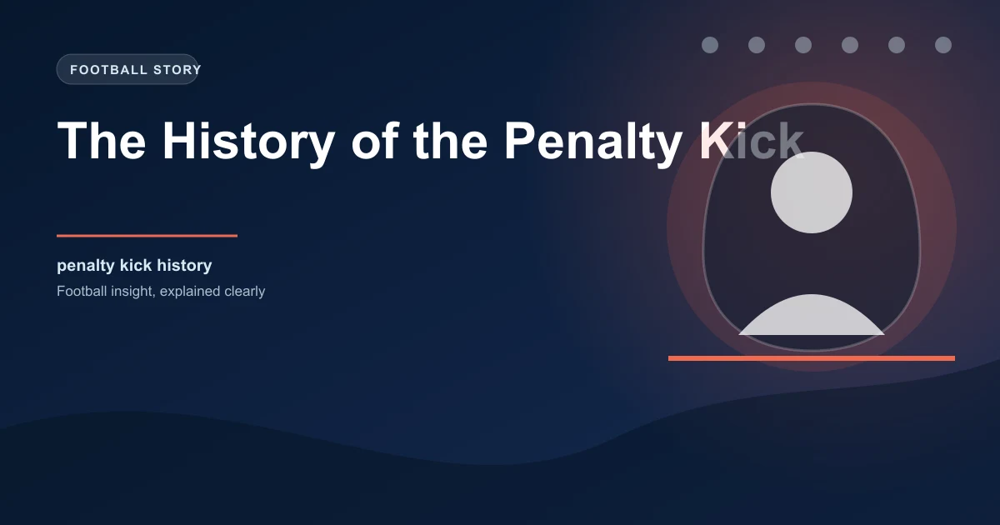

The penalty kick is football's ultimate punishment and its most dramatic spectacle. A single player, twelve yards from goal, against one goalkeeper. Everything on the line. But this moment of pure tension wasn't always part of the game.
The penalty kick was invented to solve a problem that had plagued football since its earliest days: how do you punish a team for a deliberate foul that stops a certain goal?
Before the penalty kick existed, football had a serious fairness issue. Defenders could deliberately trip, push, or handball an opponent who was about to score, and the only punishment was a free kick from the spot of the foul. But a free kick from close range, with a wall of defenders blocking the goal, was nowhere near the scoring opportunity the fouled player would have had.
This created a perverse incentive: fouling became a legitimate defensive tactic. Teams realized that giving away a free kick near goal was far less dangerous than allowing the attack to continue. The beautiful game was being undermined by cynicism.
The penalty kick was proposed by William McCrum, a goalkeeper from Milford, County Armagh, in Ireland. McCrum was a member of the Irish Football Association, and in 1890 he put forward a resolution suggesting that a direct kick at goal be awarded for deliberate fouls committed within 12 yards of the goal line.
The proposal was initially rejected by the IFAB, which governed the laws of football. The English members thought it was too harsh. They argued it would punish minor fouls with a near-certain goal, which seemed disproportionate.
But McCrum persisted. The Irish FA lobbied hard, and the proposal was revived. In June 1891, the IFAB finally adopted the penalty kick. It became Law 14 in the Laws of the Game and has remained there ever since.
William McCrum was a silk manufacturer by trade and played in goal for Milford FC. His name is virtually unknown to most football fans, despite inventing one of the sport's most important rules.
The original 1891 penalty kick was different from what we see today. There was no penalty spot marked on the pitch. Instead, the ball was placed on the goal line, eight yards from the goal post chosen by the kicker. The goalkeeper had to stand on the goal line, and all other players had to be outside the penalty area and at least six yards from the ball.
The kicker had to kick the ball forward (not backward), and the goalkeeper could not move off the line until the ball was kicked. This gave the kicker a significant advantage, which was the whole point: deliberate fouls near goal should result in a very good scoring chance.
The penalty area, the box we all recognize today, didn't exist in its original form. In 1891, there was no marked area on the pitch. The rule simply stated the distances players had to maintain.
The penalty area was introduced in 1902, initially as a rectangle 18 yards wide and 12 yards deep from the goal line. This gave referees a clear visual reference for enforcing the rules and made the penalty kick much easier to administer.
In 1937, the penalty area was expanded to its current dimensions: 44 yards wide and 18 yards deep. The penalty spot was moved to 12 yards from the goal line, where it remains today.
Many fans assume penalty shootouts have always existed, but they were actually introduced much later than the penalty kick itself. The shootout was adopted by IFAB in 1970, and its first use in a major tournament was at the 1976 European Championship final between Czechoslovakia and West Germany.
Before shootouts, tied knockout matches were decided by coin tosses, replays, or drawing lots. These methods were seen as deeply unsatisfying, especially in World Cup matches. The 1968 European Championship semi-final between Italy and the Soviet Union was decided by a coin toss, which still angers football historians today.
The shootout was designed by Israeli journalist Yosef Dagan, who was inspired by the dramatic coin-toss elimination of the Soviet Union at the 1968 Olympics. His proposal, co-authored with Michael Almog, was presented to IFAB and accepted.
| Year | Change | Impact |
|---|---|---|
| 1891 | Penalty kick introduced | Deliberate fouls now punished severely |
| 1902 | Penalty area marked on pitch | Clearer enforcement for referees |
| 1937 | Penalty area expanded to current size | Spot moved to 12 yards |
| 1970 | Penalty shootout introduced | Eliminated coin-toss deciders |
| 1991 | Goalkeeper must stay on line until kick | Reduced goalkeeper advantage |
| 2019 | Encroachment enforcement tightened | VAR can now review encroachment |
The penalty kick has produced some of football's most iconic moments. Roberto Baggio's miss in the 1994 World Cup final, sending Italy's penalty over the bar against Brazil. Gianluigi Buffon's tears after Italy's shootout loss in the 2006 World Cup final (which Italy actually won on penalties, though Buffon's emotion was about the broader drama). Missed penalties by Messi, Ronaldo, and other legends that have shaped tournament outcomes.
Perhaps the most dramatic shootout came in the 2005 Champions League final, when Liverpool came back from 3-0 down against AC Milan and eventually won on penalties. Jerzy Dudek's double save from Andriy Shevchenko in extra time, followed by his shootout heroics, cemented the penalty's place in football folklore.
Modern data shows that approximately 75�80% of penalties result in goals. This high conversion rate is why penalties remain such a powerful deterrent against fouling near goal. The goalkeeper's task is enormously difficult: a well-placed penalty is virtually unsaveable.
Research from the English Premier League shows that penalties aimed at the side netting, at waist height, have the highest conversion rates. Penalties down the middle are saved more often, which is counterintuitive since many kickers choose the center.
When a team wins a penalty, the in-play odds shift dramatically. Understanding that penalties are converted roughly 75�80% of the time means a team awarded a penalty in a drawn match is significantly more likely to take the lead. This is reflected in live betting markets within seconds.
VAR has added a new dimension to penalty decisions. Referees can now review handball, fouls, and other incidents inside the box with video evidence. This has increased the number of penalties awarded but also improved the accuracy of those decisions.
The introduction of semi-automated offside technology has also affected penalties, as VAR can now quickly determine whether an attacker was offside before the foul occurred, potentially nullifying a penalty award.
Handball interpretations have been a particular source of controversy. The IFAB has revised the handball law multiple times in recent years, trying to balance the original intent (preventing deliberate handballs) with the reality that the ball often hits defenders' arms accidentally in the modern game.
William McCrum's 1891 invention has stood the test of time better than almost any other football law. The basic principle remains unchanged: if you deliberately prevent a goal-scoring opportunity, you face the harshest punishment short of a red card.
The penalty kick has evolved from a simple free kick at goal to a technologically assisted, highly regulated event that can decide World Cups and Champions League finals. And it all started because an Irish goalkeeper thought the game wasn't fair enough.
Check our free daily football predictions for every match of the season.
Generate optimized accumulator combinations from today's AI-powered predictions. Set your target odds and get instant ticket suggestions.
Free Ticket Builder →Catch live matches as they happen. Get golden tips and in-play alerts.
In-Play Tips